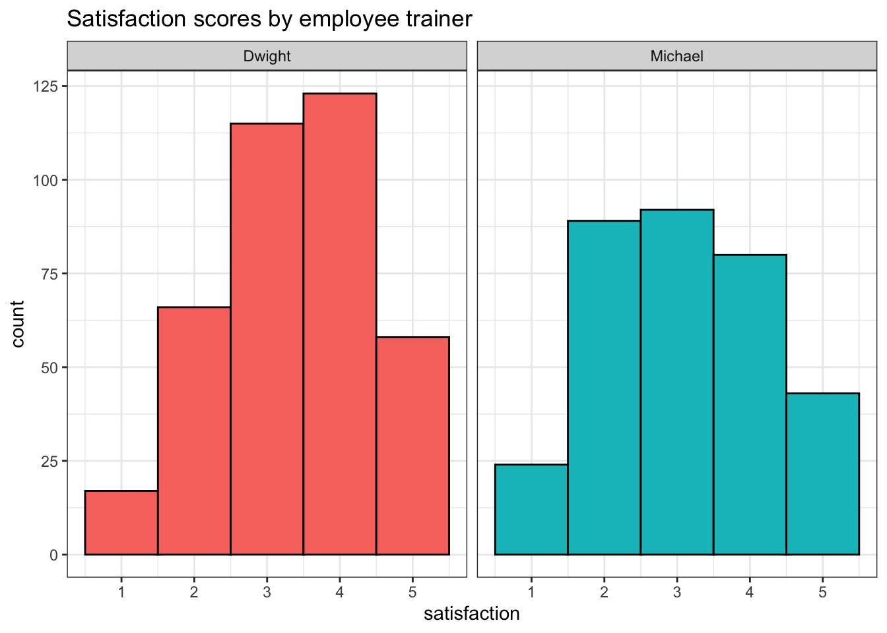

9 Data Wrangling
Intended Learning Outcomes
9.1 Functions used
- built-in (you can always use these without loading any packages)
- base::
round(),mean(),min(),max(), `sum(),as.character(),as.numeric() - stats::
median() - utils::
head(),packageVersion()
- base::
- tidyverse (you can use all these with
library(tidyverse))- readr::
read_csv() - dplyr::
count(),filter(),arrange(),mutate(),summarise(),group_by(),ungroup(),case_when(),na_if(),across() - tidyselect::
starts_with(),ends_with(),contains(),matches(),num_range(),all_of(),any_of(),everything(),where()
- readr::
- other (you need to load each package to use these)
- readxl::
read_xlsx() - janitor::
clean_names(),round_half_up()
- readxl::
9.2 Set-up
- Open your
ADS-2026project - Download the Data transformation cheat sheet
- Download a data file into the “data” folder:
- Create a new quarto file called
09-wrangle.qmd - Update the YAML header
- Replace the setup chunk with the one below
At this point in ADS it’s very likely you will have the most recent version of the case_when() that we will use in this chapter was updated in to introduce new arguments and ways of handling NA. The code we provide in this chapter will only work if you have v1.1.0 or above of packageVersion("dplyr") and if it’s below 1.1.0, install it again to update.
9.3 Wrangling functions
Data wrangling refers to the process of cleaning, transforming, and restructuring your data to get it into the format you need for analysis and it’s something you will spend an awful lot of time doing. Most data wrangling involves the reshaping functions you learned in Chapter 8 and six functions from the select, filter, arrange, mutate, summarise, and group_by. We covered the last two in detail in Chapter 4, and the others have already come up several times, so we’ll focus on more advanced data wrangling.
It’s worth highlighting that in this chapter we’re going to cover these common functions and common uses of said functions. However,
We’ll use data from the United Nations SDG Indicators Database on sustainable development goal 11.2.1: Proportion of population that has convenient access to public transport, by sex, age and persons with disabilities. You can access metadata about this data to find out more.
9.3.1 Explore
After you load the data, use glimpse(budget) or View(transport) to get familiar with the data.
Rows: 2,473
Columns: 25
$ goal <dbl> 11, 11, 11, 11, 11, 11, 11, 11, 11, 11, 11, 11, 11,…
$ target <chr> "11.2", "11.2", "11.2", "11.2", "11.2", "11.2", "11…
$ indicator <chr> "11.2.1", "11.2.1", "11.2.1", "11.2.1", "11.2.1", "…
$ series_code <chr> "SP_TRN_PUBL", "SP_TRN_PUBL", "SP_TRN_PUBL", "SP_TR…
$ series_description <chr> "Proportion of population that has convenient acces…
$ geo_area_code <dbl> 4, 4, 4, 4, 4, 4, 4, 4, 4, 4, 8, 8, 12, 12, 12, 12,…
$ geo_area_name <chr> "Afghanistan", "Afghanistan", "Afghanistan", "Afgha…
$ time_period <dbl> 2020, 2020, 2020, 2020, 2020, 2020, 2020, 2020, 202…
$ value <chr> "77.5", "69.5", "43.1", "82.4", "19.1", "44.2", "56…
$ time_detail <chr> "2020", "2020", "2020", "2020", "2020", "2020", "20…
$ time_coverage <lgl> NA, NA, NA, NA, NA, NA, NA, NA, NA, NA, NA, NA, NA,…
$ upper_bound <lgl> NA, NA, NA, NA, NA, NA, NA, NA, NA, NA, NA, NA, NA,…
$ lower_bound <lgl> NA, NA, NA, NA, NA, NA, NA, NA, NA, NA, NA, NA, NA,…
$ base_period <lgl> NA, NA, NA, NA, NA, NA, NA, NA, NA, NA, NA, NA, NA,…
$ source <chr> "UN-Habitat Urban Indicators Database", "UN-Habitat…
$ geo_info_url <lgl> NA, NA, NA, NA, NA, NA, NA, NA, NA, NA, NA, NA, NA,…
$ foot_note <chr> "Only public transport stops which are mapped are i…
$ age <chr> "ALLAGE", "ALLAGE", "ALLAGE", "ALLAGE", "ALLAGE", "…
$ cities <chr> "AF_CHARIKAR", "AF_FARAH", "AF_KANDAHAR", "AF_KHAN_…
$ custom_breakdown <lgl> NA, NA, NA, NA, NA, NA, NA, NA, NA, NA, NA, NA, NA,…
$ disability_status <chr> "_T", "_T", "_T", "_T", "_T", "_T", "_T", "_T", "_T…
$ nature <chr> "E", "E", "E", "E", "E", "E", "E", "E", "E", "E", "…
$ reporting_type <chr> "G", "G", "G", "G", "G", "G", "G", "G", "G", "G", "…
$ sex <chr> "BOTHSEX", "BOTHSEX", "BOTHSEX", "BOTHSEX", "BOTHSE…
$ units <chr> "PERCENT", "PERCENT", "PERCENT", "PERCENT", "PERCEN…It is useful to use the count() function to explore data, especially where there are too many rows or columns to view on one screen.
| age | sex | n |
|---|---|---|
| 60+ | BOTHSEX | 4 |
| ALLAGE | BOTHSEX | 2409 |
| ALLAGE | FEMALE | 30 |
| ALLAGE | MALE | 30 |
It looks like most of the data is for all ages and both sexes, so if we want to look at gender disparities in access to public transport, we will need to narrow down the data.
There are also several columns that seem to have no data, but sometimes there are important values later in the dataset. We can use count to confirm that these columns are entirely NAs.
count(transport, goal)
count(transport, target)
count(transport, indicator)
count(transport, series_code)
count(transport, series_description)
count(transport, reporting_type)
count(transport, units)| goal | n |
|---|---|
| 11 | 2473 |
| target | n |
|---|---|
| 11.2 | 2473 |
| indicator | n |
|---|---|
| 11.2.1 | 2473 |
| series_code | n |
|---|---|
| SP_TRN_PUBL | 2473 |
| series_description | n |
|---|---|
| Proportion of population that has convenient access to public transport (%) | 2473 |
| reporting_type | n |
|---|---|
| G | 2473 |
| units | n |
|---|---|
| PERCENT | 2473 |
9.3.2 Select
You can select a subset of the columns (variables) in a table to make it easier to view or to prepare a table for display. You can also select columns in a new order.
9.3.2.1 By name or index
You can select columns by name or number (which is sometimes referred to as the column index). Selecting by number can be useful when the column names are long or complicated.
You can select each column individually, separated by commas (e.g., age, sex) but you can also select all columns from one to another by separating them with a colon (e.g., goal:value).
The colon notation can be much faster because you don’t need to type out each individual variable name, but make sure that you know what order your columns are in and always check the output to make sure you have selected what you intended.
You can rename columns at the same time as selecting them by setting new_name = old_col.
9.3.2.2 Un-selecting columns
You can select columns either by telling R which ones you want to keep as in the previous examples, or by specifying which ones you want to exclude by using a minus symbol to un-select columns. You can also use the colon notation to de-select columns, but to do so you need to put parentheses around the span first, e.g., -(time_coverage:base_period), not -time_coverage:base_period.
9.3.2.3 Select helpers
Finally, you can select columns based on criteria about the column names.
| function | definition |
|---|---|
everything() |
all columns |
starts_with() |
select columns that start with a character string |
ends_with() |
select columns that end with a character string |
contains() |
select columns that contain a character string |
matches() |
select columns with a name that matches a regular expression pattern |
num_range() |
select columns with a name that matches the pattern prefix
|
where() |
select columns where the function returns TRUE |
all_of() |
select all of the columns in a vector |
any_of() |
select any of the columns in a vector that exist in the table |
Below, we make a vector of column names for columns that have only one value.
Now we can use this vector to unselect these columns.
There is a way to do this without having to type in all of the column names, but rather use functions to determine which columns have only one value and get a vector of their names. This is probaly overkill for small tables, but invaluable if you have a table with hundreds of columns, or you need to do this to many different tables.
n_values <- transport |>
1 summarise(across(
2 .cols = everything(),
3 .fns = \(col) unique(col) |> length()
))
4one_val <- n_values == 1
5one_val_cols <- one_val[, one_val] |>
names()- 1
-
Use
across()to apply a function to several columns - 2
-
Use
everything()to select all columns - 3
-
Create an anonymous function (
\(col)) that makes a vector of the unique values for each column and returns its length - 4
- Check which values are equal to 1 5 Choose the columns where this is TRUE
- 5
- Get the names of these columns
What are the resulting columns for these four examples?
-
transport |> select(contains("_area_")) -
transport |> select(where(is.numeric)) -
transport |> select(starts_with("geo_")) -
transport |> select(ends_with("_bound"))
9.3.3 Rename and relocate
Whist you can rename and reorder columns using select(), sometimes it is easier to use the rename() and relocate() functions.
9.3.4 Filter
Whilst select() chooses the columns you want to retain, filter() chooses the rows to retain by matching row or column criteria.
You can filter by a single criterion. This criterion can be rows where a certain column’s value matches a character value (e.g., “North”) or a number (e.g., 9003). It can also be the result of a logical equation (e.g., keep all rows with a specific column value larger than a certain value). The criterion is checked for each row, and if the result is FALSE, the row is removed. You can reverse equations by specifying != where ! means “not”.
# select all rows where country is Togo
transport_clean |> filter(country == "Togo")
# select all rows where country is NOT Togo
transport_clean |> filter(country != "Togo")
# select all rows where value was more than 99
transport_clean |> filter(value > 99)
# select rows where sex is FEMALE or MALE
transport_clean |> filter(sex %in% c("FEMALE", "MALE"))Remember to use == and not = to check if two things are equivalent. A single = assigns the right-hand value to the left-hand variable (much like the <- operator).
Which IDs are kept from the table below?
| id | grade | score |
|---|---|---|
| 1 | A | 95 |
| 2 | A | 91 |
| 3 | C | 76 |
| 4 | B | 84 |
-
filter(demo, score < 80) -
filter(demo, grade == "A") -
filter(demo, grade != "A") -
filter(demo, score == 91)
You can also select on multiple criteria by separating them by commas (rows will be kept if they match all criteria). Additionally, you can use & (“and”) and | (“or”) to create complex criteria.
# only data from Togo in 2020
togo_2020 <- transport_clean |>
filter(
country == "Togo",
year == 2020
)
# the same as above, using & instead of a comma
togo_2020 <- transport_clean |>
filter(
country == "Togo" &
year == 2020
)
# values under 10 or over 90
extreme_values <- transport_clean |>
filter( value < 10 | value > 90 )If you want the filter to retain multiple specific values in the same variable, the “match operator” (%in%) should be used rather than | (or). The ! can also be used in combination here, but it is placed before the variable name.
| Operator | Name | is TRUE if and only if |
|---|---|---|
A < B |
less than | A is less than B |
A <= B |
less than or equal | A is less than or equal to B |
A > B |
greater than | A is greater than B |
A >= B |
greater than or equal | A is greater than or equal to B |
A == B |
equivalence | A exactly equals B |
A != B |
not equal | A does not exactly equal B |
A %in% B |
in | A is an element of vector B |
Finally, you can also pass many other functions to filter. For example, the package str_detect() to only retain rows where the country contains the word “Island”.
| country | year | value | age | sex | time_detail |
|---|---|---|---|---|---|
| Solomon Islands | 2020 | 7.1 | ALLAGE | BOTHSEX | 2020 |
| Northern Mariana Islands | 2020 | 7.8 | ALLAGE | BOTHSEX | 2020 |
Note that str_detect() is case sensitive so it would not return values of “island” or “ISLAND”. You can use the function tolower() or toupper() to convert a string to lowercase or uppercase before you search for substring if you need case-insensitive matching.
filter() is incredibly powerful and can allow you to select very specific subsets of data. But, it is also quite dangerous because when you start combining multiple criteria and operators, it’s very easy to accidentally specify something slightly different than what you intended. Always check your output. If you have a small dataset, then you can eyeball it to see if it looks right. With a larger dataset, you may wish to compute summary statistics or count the number of groups/observations in each variable to verify your filter is correct. There is no level of expertise in coding that can substitute knowing and checking your data.
Let’s narrow down our dataset to just the rows that report values aggregated by age, but separate for sex.
9.3.5 Arrange
You can sort your dataset using arrange(). You will find yourself needing to sort data in R much less than you do in Excel, since you don’t need to have rows next to each other in order to, for example, calculate group means. But arrange() can be useful when preparing data for display in tables. arrange() works on character data where it will sort alphabetically, as well as numeric data where the default is ascending order (smallest to largest). Reverse the order using desc().
If you want to sort character data/categories in a specific order, turn the column into a factor and set the levels in the desired order.
9.3.6 Mutate
The function mutate() allows you to add new columns or change existing ones by overwriting them by using the syntax new_column = operation. You can add more than one column in the same mutate function by separating the columns with a comma. Once you make a new column, you can use it in further column definitions. For example, the following code creates a new column called urban, which is true if the string “Urban average” is detected in the foot_note column, and fixes the data type of value by replacing it with the numeric version.
mutate() can also be used in conjunction with other functions and Boolean operators. For example, we can add another column to transport_data that states whether the value is above the median value. Just like when we used Boolean expressions with filter, it will evaluate the equation and return TRUE or FALSE depending on whether the observation meets the criteria.
You can overwrite a column by giving a new column the same name as the old column (see region or product) above. Make sure that you mean to do this and that you aren’t trying to use the old column value after you redefine it.
You can also use case_when() to specify what values to return, rather than defaulting to TRUE or FALSE:
The case_when() function allows allows you to set multiple criteria, although we’re only using one non-default criterion here. It can be very useful, but takes a little practice.
You can also use case_when() to combine different criteria:
# use different cutoffs for urban and non-urban areas
transport_data <- transport_factor |>
mutate(
urban = str_detect(foot_note, "Urban average"),
value = as.numeric(value),
category = case_when(
urban & value < 75 ~ "low",
urban & value < 85 ~ "average",
urban & value >= 85 ~ "high",
!urban & value < 20 ~ "low",
!urban & value < 60 ~ "average",
!urban & value >= 60 ~ "high",
.default = NA
)
) |>
select(-foot_note) # get rid of very long data no longer usedBe mindful that .default uses = whilst the others use ~. Emily has lost quite a lot of her time and sanity to not realising this.
Just like filter(), mutate() is incredibly powerful and the scope of what you can create is far beyond what we can cover in this book.
9.3.7 Summarise
You were introduced to the summarise() function in Section 4.4. This applies summary functions to an entire table (or groups, as you’ll see in the next section).
Let’s say we want to
9.3.8 Group By
You were introduced to the group_by() function in Section 4.5. For example, you can break down the summary statistics above by sex
transport_data |>
group_by(sex) |>
summarise(
mean = mean(value),
min = min(value),
max = max(value)
) |>
ungroup()| sex | mean | min | max |
|---|---|---|---|
| MALE | 67.88000 | 9.5 | 87.1 |
| FEMALE | 69.32667 | 17.3 | 87.6 |
Newer code tends to use this format, however, if you just need to group the data for one function, you can use .by.
| sex | mean | min | max |
|---|---|---|---|
| FEMALE | 69.32667 | 17.3 | 87.6 |
| MALE | 67.88000 | 9.5 | 87.1 |
Functions that let you create your own argument names, like mutate() and summarise, usually have all their other arguments start with . so you can create new columns with names like “data” or “by”. See what happens if you accidentally use by instead of .by.
How would you find out the maximum value for each country, separately by sex?
You can also use group_by() or by in combination with other functions. For example, slice_max() returns the top N rows, ordered by a specific variable.
| country | year | value | age | sex | time_detail | source | geo_area_code | cities | disability_status | nature | urban | category |
|---|---|---|---|---|---|---|---|---|---|---|---|---|
| Uzbekistan | 2022 | 87.6 | ALLAGE | FEMALE | 2022 | National Statistics Committee of the Republic of Uzbekistan | 860 | NOCITI | _T | C | TRUE | high |
| Uzbekistan | 2019 | 87.3 | ALLAGE | FEMALE | 2019 | National Statistics Committee of the Republic of Uzbekistan | 860 | NOCITI | _T | C | TRUE | high |
But this can be combined with group_by() to return the top sales for each region:
| country | year | value | age | sex | time_detail | source | geo_area_code | cities | disability_status | nature | urban | category |
|---|---|---|---|---|---|---|---|---|---|---|---|---|
| Uzbekistan | 2022 | 87.6 | ALLAGE | FEMALE | 2022 | National Statistics Committee of the Republic of Uzbekistan | 860 | NOCITI | _T | C | TRUE | high |
| Uzbekistan | 2019 | 87.3 | ALLAGE | FEMALE | 2019 | National Statistics Committee of the Republic of Uzbekistan | 860 | NOCITI | _T | C | TRUE | high |
| Uzbekistan | 2022 | 87.1 | ALLAGE | MALE | 2022 | National Statistics Committee of the Republic of Uzbekistan | 860 | NOCITI | _T | C | TRUE | high |
| Uzbekistan | 2019 | 86.8 | ALLAGE | MALE | 2019 | National Statistics Committee of the Republic of Uzbekistan | 860 | NOCITI | _T | C | TRUE | high |
| Uzbekistan | 2023 | 86.8 | ALLAGE | MALE | 2023 | National Statistics Committee of the Republic of Uzbekistan | 860 | NOCITI | _T | C | TRUE | high |
9.4 Complications
9.4.1 Rounding
Let’s say we want to round all the values to the nearest percent and add a % sign.
transport_data |>
mutate(pcnt = round(value) |> paste0("%")) |>
filter(str_detect(value, "\\.5")) |>
select(value, pcnt)| value | pcnt |
|---|---|
| 9.5 | 10% |
| 65.5 | 66% |
| 79.5 | 80% |
| 84.5 | 84% |
If you look at the values above, you can see that the first three round up fro .5, and the last rounds down. What’s going on!?
This may seem like a mistake, but R rounds .5 to the nearest even number, rather than always up, like you were probably taught in school. This prevents overestimation biases, since x.5 is exactly halfway between x and x+1, so there is no reason it should always round up.
However, this might throw a monkey wrench into your own systems. For example, our school policy is to round up for course marks at x.5. The easiest solution is to use the round_half_up() function from the package
This should work as you’d expect.
9.4.2 Missing values
If you have control over your data, it is always best to keep missing values as empty cells rather than denoting missingness with a word or implausible number. If you used “missing” rather than leaving the cell empty, the entire variable would be read as character data, which means you wouldn’t be able to perform mathematical operations like calculating the mean. If you use an implausible number (0 or 999 are common), then you risk these values being included in any calculations as real numbers.
However, we often don’t have control over how the data come to us, so let’s run through how to fix this.
9.4.2.1 Bad missing values
What if the South region hadn’t returned their expenses (entered as 0) and the North region hadn’t returned their sales data for 2020 yet, so someone entered it as “missing”?
First, we’re going to recode the data to add in the missing values. We can use case_when() to set the value to “missing” if the year is 2000 and country is “Uzbekistan”, otherwise use the original value. You can’t combine number and character data types in the same column, so you need to convert the default value into a character (thi is your first sign that this isn’t a good idea).
Now, if you try to compute the mean value, you will get an error message and the result will be NA.
9.4.2.2 Convert missing values to NA
To set the missing values to NA, we can use the handy function na_if(). We’ll also need to transform value back to numeric.
Now, if we try to calculate the mean value for each country, we get missing values for any summary value that contains an NA.
9.4.2.3 Ignore missing values
This is because NA basically means “I don’t know”, and the sum of 100 and “I don’t know” is “I don’t know”, not 100. However, when you’re calculating means, you often want to just ignore missing values. Set na.rm = TRUE in the summary function to remove missing values before calculating.
9.4.2.4 Count missing values
If you want to find out how many missing or non-missing values there are in a column, use the is.na() function to get a logical vector of whether or not each value is missing, and use sum() to count how many values are TRUE or mean() to calculate the proportion of TRUE values.
9.4.2.5 Omit missing values
You may also want to remove rows that have missing values and only work from complete datasets. drop_na() will remove any row that has a missing observation. You can use drop_na() on the entire dataset which will remove any row that has any missing value, or you can specify to only remove rows that are missing a specific value.
If you use drop_na() without specifying columns, make absolutely sure that is what you want to do. There are often columns in a dataset that you don’t care about, such as a “notes” column, that contain NAs, and these will be removed unless you specify which columns are the important ones.
Missing data can be quite difficult to deal with depending on how it is represented. As always, no amount of coding expertise can make up for not understanding the structure and idiosyncrasies of your data.
9.5 Exercises
Let’s try some exercises using a dataset with simulated survey data so that you can see how much more you’re able to do with the data now.
- Save your current Markdown, close it, and open a new qmd named “survey_data_mad_skillz”.
- In the set-up code chunk, load the tidyverse, then load the dataset from https://psyteachr.github.io/ads-v2/data/survey_data.csv into an object named
survey_data. - Use your method of choice to review the dataset and familiarise yourself with its structure.
# from https://www.kaggle.com/kyanyoga/sample-sales-data
library(tidyverse)
survey_data <- read_csv("https://psyteachr.github.io/ads-v2/data/survey_data.csv")Rows: 707 Columns: 7
── Column specification ────────────────────────────────────────────────────────
Delimiter: ","
chr (3): caller_id, employee_id, issue_category
dbl (3): wait_time, call_time, satisfaction
dttm (1): call_start
ℹ Use `spec()` to retrieve the full column specification for this data.
ℹ Specify the column types or set `show_col_types = FALSE` to quiet this message.9.5.1 Creating new categories
Employees 1-5 were trained by Michael and employees 6-10 were trained by Dwight.
- Create a new column named
trainerthat lists the trainer for each employee. - Then, calculate the average satisfaction scores for employees trained by each trainer and visualise the satisfaction scores for each in whatever way you think best.
r hide("Hint") To add the trainer column you can use case_when() and specify multiple criteria (e.g., if the employee is 1-5, Michael, if the employee is 6-10 Dwight) r unhide()
# case_when() method
survey_data <- survey_data |>
mutate(trainer = case_when(
employee_id %in% c("E01", "E02", "E03", "E04", "E05") ~ "Michael",
employee_id %in% c("E06", "E07", "E08", "E09", "E10") ~ "Dwight")
)
# mean satisfaction scores
survey_data |>
summarise(.by = trainer,
mean_satisfaction = mean(satisfaction))
# possible visualisation
ggplot(survey_data, aes(x = satisfaction, fill = trainer)) +
geom_histogram(binwidth = 1, show.legend = FALSE, colour = "black") +
facet_wrap(~trainer) +
labs(title = "Satisfaction scores by employee trainer")
| trainer | mean_satisfaction |
|---|---|
| Michael | 3.088415 |
| Dwight | 3.366755 |
9.5.2 Filter by calculated score
First, calculate the average wait time and store this in an object named mean_wait. This should be a single value rather than a table.
There are multiple ways to achieve this. You could create the table and then pull out the single value, or just calculate the single value.
Now create a dataset named long_wait that just contains data from customers who waited more than the average wait time.
Create a visualisation that shows how many customers waited more than the average wait time for each employee.
9.5.3 Multiple critera
Now, add a column to survey_data named follow_up that flags whether a customer should be followed up with a courtesy phone call. Your company is short-staffed so only customers that meet all three of the following criteria should be followed-up:
- Their wait time should be above the average for all calls
- Their call time should be above the average for their category
- Their satisfaction should be less than three 3.
This is quite complicated and there are multiple ways to achieve the desired outcome. Some approaches may need other functions that were covered in previous chapters and you may need to create intermediate objects.
Call the final object follow_data and keep only the customer ID, employee ID, trainer, and follow up columns.
# this is one possible solution, there are many other valid approaches
# calculate mean wait time across all calls
mean_wait <- mean(survey_data$wait_time)
# calculate mean call time for each category
follow_data <- survey_data |>
summarise(.by = issue_category,
mean_call = mean(call_time)) |>
#then join it to the survey data
left_join(survey_data, by = "issue_category") |>
# then add on the column
mutate(follow_up = case_when(wait_time > mean_wait &
call_time > mean_call &
satisfaction < 3 ~ "yes",
.default = "no")) |>
select(caller_id, employee_id, trainer, follow_up)For all of the above, write code that stores the answer as a single value, so that you could easily use it in inline coding.
How many customers need to be followed up:
- In total?
- From calls by employee 06?
- From calls by employees trained by Michael
- From calls by employees trained by Dwight
`group_by |> count() |> filter() |> pull()
Which employee needs to make the largest number of follow-up courtesy calls?
As above but add in an ungroup() and slice_max() along the way.
# in total
follow_data |>
count(follow_up)|>
filter(follow_up == "yes") |>
pull(n)
# by employee 6
follow_data |>
count(follow_up, employee_id) |>
filter(employee_id == "E06",
follow_up == "yes") |>
pull(n)
# by michael
follow_data |>
count(follow_up, trainer) |>
filter(trainer == "Michael",
follow_up == "yes") |>
pull(n)
# by dwight
follow_data |>
count(follow_up, trainer) |>
filter(trainer == "Dwight",
follow_up == "yes") |>
pull(n)
# most follow-ups needed
follow_data |>
count(follow_up, employee_id) |>
filter(follow_up == "yes") |>
slice_max(n = 1, order_by = n) |>
pull(employee_id)[1] 120
[1] 16
[1] 65
[1] 55
[1] "E02"9.5.4 Original insight
In preparation for the final summative assessment, explore the data to provide one original insight of your own.
9.6 Glossary
| term | definition |
|---|---|
| boolean-expression | An expression that evaluates to TRUE or FALSE. |
| data-wrangling | The process of preparing data for visualisation and statistical analysis. |
| factor | A data type where a specific set of values are stored with labels; An explanatory variable manipulated by the experimenter |
| logical | A data type representing TRUE or FALSE values. |
| operator | A symbol that performs some mathematical or comparative process. |
| string | A piece of text inside of quotes. |
9.7 Further resources
- Data transformation cheat sheet
- Chapter 18: Missing Data in R for Data Science
- Chapter 3: Data Transformation in R for Data Science
- Chapter 25: Functions in R for Data Science
- Introduction to stringr